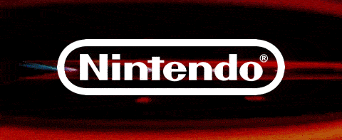

La magia de Nintendo
Desde las primeras pantallas del Game & Watch hasta la versatilidad de la Nintendo Switch, Nintendo ha definido generaciones enteras de jugadores. Sus franquicias son íconos de la cultura pop: Mario, Zelda, Pokémon, Metroid y más. Encuentra consolas, juegos originales y accesorios oficiales para vivir la experiencia Nintendo en su máxima expresión.
✦ Switch · Switch OLED · Switch Lite · Juegos Físicos y Digitales